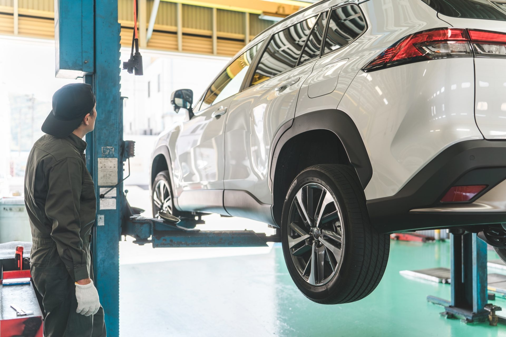
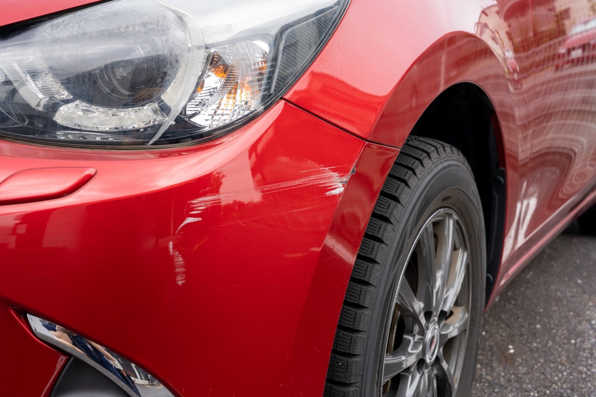
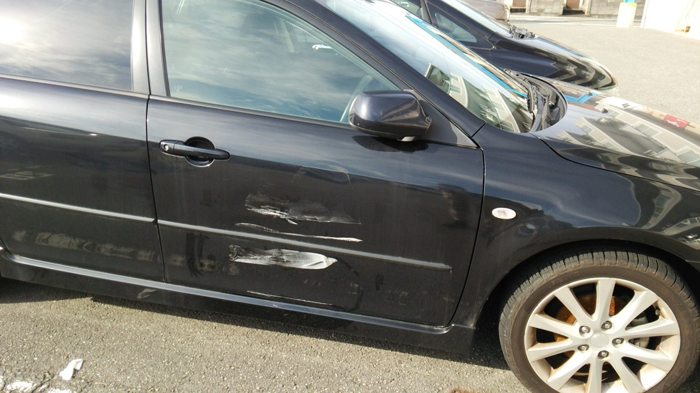
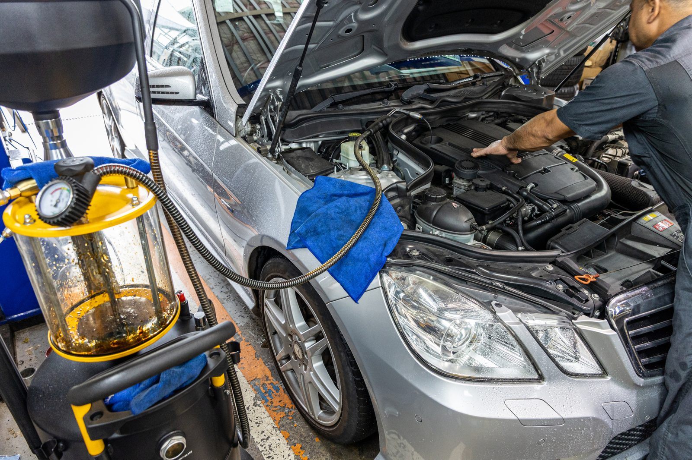

01 — 車検
車検・法定点検
代車無料。土曜も受付。事前にLINEで車検証の写真を送っていただければ、お見積りまで済ませられます。
¥58,000〜軽自動車・諸費用込
Yamaguchi City · Auto Service
車検・修理・鈑金・タイヤ交換。写真を送るだけのLINE相談にも対応しています。「この傷、いくらで直る？」は、電話しなくても聞けます。
見積り無料・その日のうちに概算をお返しします（営業時間内）。

「まず電話して、持ち込んで、見てもらって、それから見積り」——その前に、写真1枚で概算がわかります。


こんな写真で大丈夫です。近くで1枚と、少し離れて1枚。明るい場所で撮ると、より正確に見られます。
料金は目安です。お車の状態を拝見してから、正式なお見積りをお出しします。

Inspection & Maintenance01 — 車検
代車無料。土曜も受付。事前にLINEで車検証の写真を送っていただければ、お見積りまで済ませられます。
¥58,000〜軽自動車・諸費用込
02 — 修理
異音・警告灯・エアコン不調など。診断機での点検から。
¥3,300〜診断料
03 — 鈑金
小さなこすり傷から事故修理まで。保険を使う場合のご相談も。
¥16,500〜バンパー傷の例
04 — タイヤ
持ち込み交換OK。季節タイヤの保管サービスもあります。
¥2,200〜1本・交換工賃
05 — オイル
オイル、バッテリー、ワイパー、ブレーキパッド。待ち時間の目安もお伝えします。
¥4,400〜オイル交換
06 — 中古車
整備工場だから、納車前整備込み。乗り換えのご相談も。
ご相談在庫はLINEでお知らせ
※ 表示金額は架空デモ用の例です。実在の店舗・料金ではありません。
電話しないと何も分からない店から、スマホから気軽に相談できる店へ。写真を送るだけです。
1SHOOT
車の傷をスマホで撮影近くと少し離れた位置の2枚があると正確です。
2SEND
LINEで写真を送信友だち追加して、トークに写真を送るだけ。文章は一言でOK。
3REPLY
概算・来店のご案内営業時間内なら当日中に、概算と作業時間の目安をお返しします。
4VISIT
必要ならご予約・来店日時を決めてご来店。代車の手配もLINEで済みます。
※ 概算は写真から判断できる範囲のものです。実車を拝見して金額が変わる場合は、作業前に必ずご説明します。
「どのくらいの傷が、いくらで、何日で直るのか」。事例は判断の材料になります。
駐車場で壁にこすった傷。部分塗装で対応し、交換せずに費用を抑えました。
塗装まで削れた傷は、へこみを整えてから部分塗装。色合わせを丁寧に。
保険対応。代車をお出しし、修理中の写真もLINEで共有しました。
※ 事例・金額・日数はすべて架空デモ用の例です。
大きな工場ではありません。その分、顔が見えて、話が早い。
持ち込む前に「だいたいいくら」が分かるので、時間を無駄にしません。
追加作業が必要になったら、作業前にLINEでご連絡。勝手に進めません。
平日に来られない方も大丈夫。代車は事前予約で確保します。
仕上がりの写真と、次の点検時期の目安をLINEでお届けします。
整備士2名と受付1名の小さな工場です。顔写真が入る予定の場所です。
この道32年。「難しい言葉を使わない」が信条です。
鈑金塗装を担当。仕上がりの写真はだいたい私が撮っています。
LINEのお返事は私から。写真だけ送っていただければ大丈夫です。
国道沿い、駐車場8台。ナビには電話番号ではなく住所を入れてください。
聞きにくいことほど、先に書いておきます。
「これ、直せますか？」「いくらですか？」——それだけで大丈夫です。営業時間内なら、その日のうちに概算をお返しします。
日曜・祝日はお休みです。LINEはいつでも送れます。